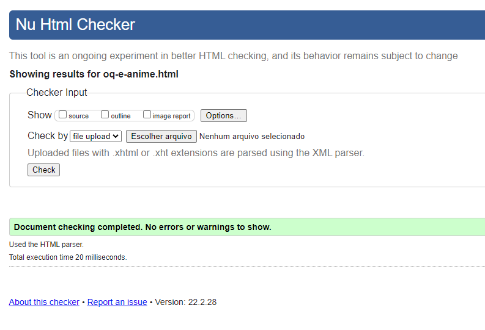

Introdução
Olá! Meu nome é Caio Levi Mendes Costa. Eu sou aluno do P5 do Curso Técnico Integrado em Informática, no IFCE.
Esse site foi desenvolvido como parte da Disciplina de Programação Web 1, do Professor José Roberto Bezerra e cujo tema escolhido foi Anime.
Justificativa
O tema foi escolhido por causa da minha afinidade com as animações japonesas e porque acredito que os animes são uma forma importante de mídia que atinge grande público.
Objetivos
Catálogo de Animes
Criar um banco de dados com o máximo possível de animes usando os dados do MAL (My Anime List) traduzidos, formando um catálogo com os dados. Cada anime conterá, pelo menos, os seguintes atributos:
- Nome do Anime
- Quantidade de Episódios
- Gêneros
- Status
- Nota do MAL
- Ano de Lançamento e Temporada
- Sinopse
Mecanismo de Busca
O mecanismo de busca no catálogo de Animes possuirá filtros de pesquisa, como por exemplo:
- Gênero
- Nota do MAL
- Ano de Lançamento
Calendário de Animes
O lançamento de animes, sejam novos ou continuações, é planejado por estação e os espisódios são lançados semanalmente, para exibir quais animes são lançados e em quais dias da semana.
Extra
- Mecanismo de Interação onde os usuários podem dar notas aos Animes, além de deixar opniões sobre eles.
- Possibilidade dos usuários se cadastrarem e fazerem listas de seus Animes favoritos.
- Mecanismo de recomendação de animes
Prazo
A tabela a seguir possui os prazos estimados, porém é muito incompleta por falta de conhecimento técnico e de como vai ser o dercorrer do projeto
| Tarefa | Tempo Estimado | Data de Início | Data de Finalização |
|---|---|---|---|
| Fazer HTML básico de cada página | 4~7 dias | ? | ? |
| Fazer CSS de cada página | 4~7 dias | ? | ? |
| Criar Banco de Dados | 2~3 dias | ? | ? |
| Criar mecanismo de coleta de dados | 1~2 dias | ? | ? |
| Armazenar os dados no banco | 1~2 dias | ? | ? |
| Preencher a página com os dados | 1~2 dias | ? | ? |
| Criar mecanismo de busca no banco | 1~2 dias | ? | ? |
| Associar mecanismo de busca a página | 2~3 dias | ? | ? |
Validação
A seguinte tabela mostra uma correlação entre as páginas do site, se elas foram validadas e o site em que foi feito
| Arquivo HTML | Validado | Site | Comprovação |
|---|---|---|---|
| index.html | Ok | W3C | |
| oq-e-anime.html | OK | W3C |  |
| animes-populares.html | Ok | W3C | |
| referencias.html | Ok | W3C |